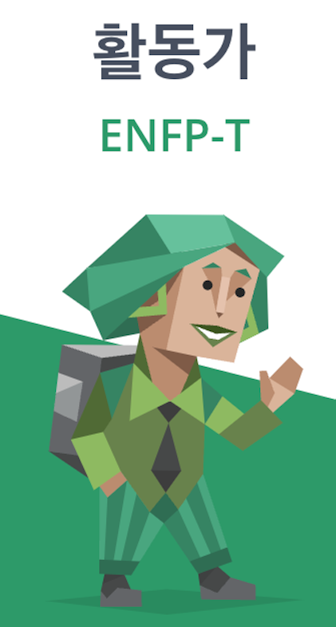

계기는 부끄러운 생각에서인데 22년 6월 여행지에서 풍경을 보다 불현듯 '내가 보는 이 풍경이 가상으로 만들어진 것이라면 나무 하나하나 저 강물의 물줄기 하나하나는 몇 Byte고 어떻게 구현한 것일까?' 라는 생각에 집에와서 파이썬을 공부해서 작은것들을 만들어보았는데 너무 재미있었고 자세히 배워보고 싶어져서 지원했습니다.
MBTI

현재 제 MBTI 는 ENTP 입니다. 항상 ENFP 였는데 작년말에 어떤일로 바뀌었습니다
ENTP
-지적도전을 즐기는 영리하고 호기심이 많은 사색가 -외향형이지만 혼자만의 시간도 중요하다. -새로운 시도를 좋아하고, 여행을 즐겨다닌다. -개방적이고 자유로운것을 좋아한다. -etc...
FAVORITES
컴퓨터 관련한것은 당연히 좋아합니다 컴퓨터를 제외하고 하나만 골라보자면
여행하며 사진찍기
어릴적부터 여행하는것을 좋아했습니다. 여행하며 다양한 사람들을 만나고 다양한 문화를 체험하다보니 자연스럽게 사진찍는것도 좋아하게 되었습니다.


Introduce
-어려서부터 장난기와 호기심이 많았습니다.-하나하나 분해해서 확인해보는걸 좋아해요.
-궁금한건 해결해야 직성이 풀립니다.
-새로운 지식을 배우는걸 좋아해요.
Reason to be a Developer
계기는 부끄러운 생각에서인데22년 6월 여행지에서 풍경을 보다 불현듯
'내가 보는 이 풍경이 가상으로 만들어진 것이라면
나무 하나하나 저 강물의 물줄기 하나하나는
몇 Byte고 어떻게 구현한 것일까?' 라는 생각에
집에와서 파이썬을 공부해서 작은것들을 만들어보았는데
너무 재미있었고 자세히 배워보고 싶어져서 지원했습니다.